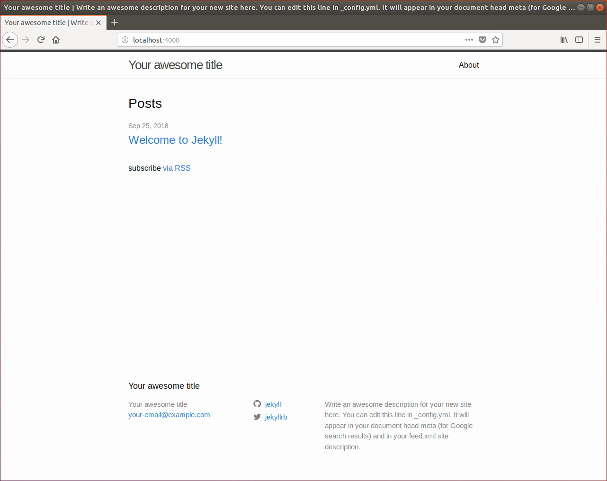

Website Redesign
I’ve had a number of websites over the years in one form or the other. Usually the websites were project websites that happened to have a small about section where I wrote something short and unmemorable about myself. Unfortunately I got busy and maintaining those websites got de-prioritized, finally existing in some internet archive somewhere and disappearing from active use. The world has changed a bit since then and I got curious as to the advancements of static site generators like Apache Forest. A static site generator uses dynamic logic to create static websites that load faster and would be easier to maintain for someone working part-time on site maintenace, like me.
While I generally like Apache products, Apache Forest doesn’t seem to have been updated for a while and I aimed to find the most popular static site generator in use. In open source, high usage usually means that it’s reasonably maintained and fits some minimal use cases very well. After some research I happened upon Jekyll.
I don’t know Ruby, but the installation seemed pretty straight forward and seeing as GitHub seems to use it for their GitHub pages service, I figured I couldn’t go too wrong. One of the nice things about Jekyll is that there are lots of tutorials and instructions all over the Internet on how to make all sorts of websites with it. GitHub has some good instructions as well, but I decided to see if I could find some instructions that were more generic which would allow me to move my site to anywhere without worrying about any kind of GitHub specific pages config (not that I really saw any, but you never know).
Seeing as a I like to keep things seperated, I fired up a brand spanking new Ubuntu 18.04 Desktop VM, did a minimal install, updated everything, installed ssh and I was ready to start.
At a bash prompt, a quick…
sudo apt-get install ruby ruby-dev build-essential
…and I was ready to install Jekyll.
Following the instructions from the website and executing at a bash prompt again…
echo '# Install Ruby Gems to ~/gems' >> ~/.bashrc
echo 'export GEM_HOME=$HOME/gems' >> ~/.bashrc
echo 'export PATH=$HOME/gems/bin:$PATH' >> ~/.bashrc
source ~/.bashrc
gem install jekyll bundler
…and now Jekyll is installed. It really was painless.
Time to serve up a site for development…
jekyll new cottley-site
cd cottley-site/
bundle exec jekyll serve
…And here we go.

Ugh! I mean yay (obviously), but also, Ugh!
Granted, this was about 5 minutes of work (including network downloads), but goshdarnit, first impressions matter. I understand the bare minimalism so you can customize what you want, but, ugh. This was supposed to make my website life easier, not look so, plain. I know I know, there are links to some themes at Jekyll Themes.org and Jekyll Themes.io are on the website under the resources, but if you at least give me a link to one of them on the very first site I throw up I’ll be more likely to think that even the minimal effort was worth it because changing the theme is easy and possible.
I found a super nice theme called Jasper2 and spent a few minutes trying to figure out how to get it installed.
…And you don’t install it, the theme IS the site and you need to config the site and put the posts in it. Ok, fine. Let’s do a serve in an extracted Jasper2 folder… and it doesn’t work. Of course. At least it tells me I have to install some gems and to run:
bundle install
All seems to be working well until it can’t install nokogiri, whatever that is and suggests that I
gem install nokogiri -v '1.8.4' --source
which doesn’t work and so I try
gem install nokogiri -v '1.8.4' --source 'https://rubygems.org/'
which still doesn’t work.
Looking at the error, it can’t find zlib for some reason so I go looking to install some ruby zlib library. I find one and…
sudo apt-get install ruby-zip
Still doesn’t work. Installing a theme shouldn’t be this hard man! Looking at the error further it seems that Jekyll / Ruby invokes gcc to compile some code and it can’t find the zlib header library. I do a
sudo apt-get install libz-dev
and manage to install nokogiri ok now.
A final
bundle install
bundle exec jekyll serve
in the terminal and I finally, FINALLY have the theme site up and running.
I play with some config settings, replace some images, start putting in posts and boom, new website.
The only thing Jasper2 doesn’t seem to do is generate a nice xml sitemap for me, so I grabbed a Jekyll Sitemap Generator Plugin and installed it (which is much easier than the theme crazy).
That’s it, I’m going to try continue consolidating my tech rantings here so if at least, dear reader, you don’t find me entertaining, you at least find me informative.